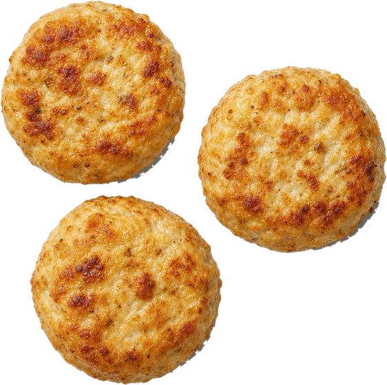
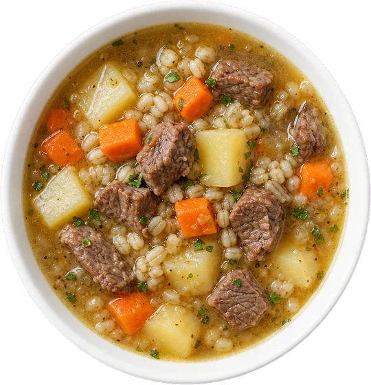
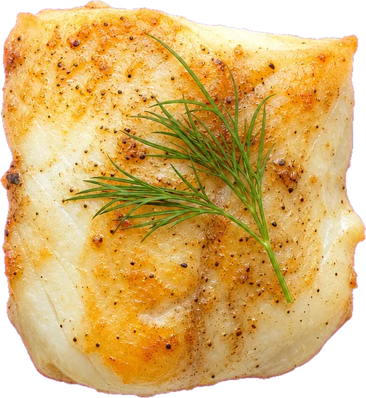
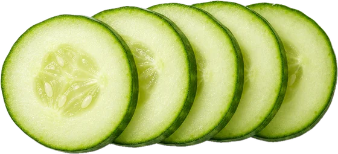
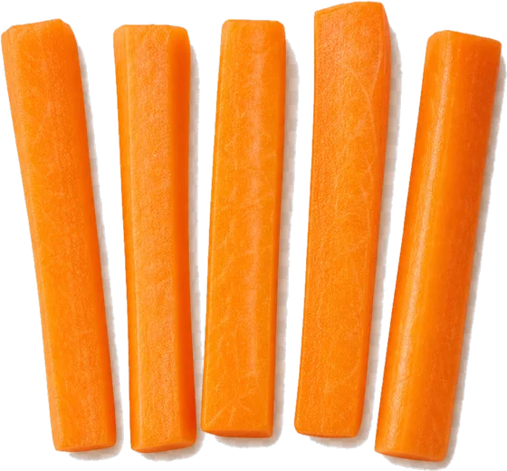
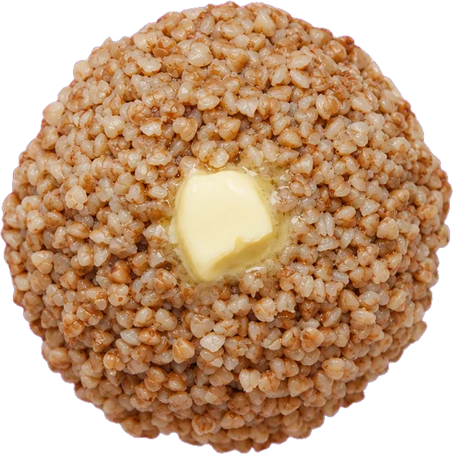
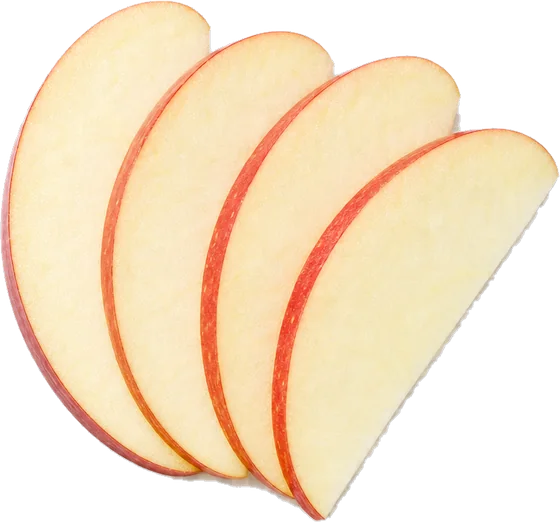

Мереке Ахмет, специалист по коррекции питания детей и мама
Ребёнка не нужно уговаривать, чтобы он поел
Помогаю мягко расширить рацион: без мультиков за едой, без «ну ещё ложечку» и без отдельной готовки для ребёнка.
Рацион растёт по одному продукту
Так выглядит путь семей, которые прошли сопровождение. Слова мам взяты из их сообщений Мереке.
-
Ест только макароны. Новое выплёвывает, без мультика за стол не садится.
С этого начинает большинство семей
-
Сын начал кушать фарш! Уже неделю ест колбаски из фарша, а сегодня съел куриные котлеты с пюре.
Мама из группы сопровождения. До этого сын полтора года не ел мясо
-
Ура, сработало! В обед был суп с перловкой, картошкой и мясом. Амиржан съел 6, целых 6 ложек!
Мама Амиржана
-
Айдана вчера поела запечённую картошку, недавно поела рыбу.
Мама Айданы, 6 лет
-
Ещё недавно она попробовала белок от яйца. Для нас всё это было что-то из области фантастики.
Мама Айданы
-
Открыли новые продукты: сыр, хлебцы и пару намазок к ним. Стал намного лучше жевать и глотать.
Мама Дарины, две недели индивидуальной работы
-
Наша мечта начинает воплощаться в реальность. За полтора месяца набрали 2 кг и расширили рацион в разы.
Та же мама, что писала про фарш








Что из этого про вашего ребёнка?
Отметьте всё, что узнаёте. Это темы, с которыми мамы приходят к Мереке чаще всего.
Пока ничего не отмечено.
Вебинар «Малоежки»
Почему ребёнок ест пять продуктов и как за 21 день расширить рацион без мультиков, уговоров и отдельной готовки.
На эфире разберём
- почему ребёнок отказывается от еды
- какие ошибки родителей незаметно поддерживают избирательность
- как мягко расширять рацион, если ребёнок требует только привычную еду
- что делать с новым блюдом, которое вызывает протест
- с чего начать уже на следующий день после вебинара
После регистрации вы попадёте в закрытый WhatsApp-канал. В день эфира там появится ссылка и материалы.
Мереке Ахмет
Специалист по коррекции питания детей и мама. Больше пяти лет помогаю семьям наладить питание ребёнка и расширить рацион без давления, уговоров и наказаний.
Метод я проверяю дома: мой сын ест за общим столом то же, что и вся семья. С семьями работаю вместе с командой кураторов. Каждая мама получает план питания и поддержку в чате, а не просто список продуктов.
- 37,1 тыс.
- мам читают Instagram
- 5+ лет
- практики с семьями
- 187 тыс.
- просмотров у рилс «Чем мы кормим ребёнка?»
Короткие разборы в Instagram
@pro_prikorm_kzМамы пишут сами
Скриншоты из чатов сопровождения. Нажмите, чтобы открыть крупно.
«У меня была тревога, что ребёнок мало ест и не кушает сам. Спустя 4 недели могу точно сказать: он кушает полностью самостоятельно».
Достижения за месяц:
- пришли к режиму
- убрали хаотичные перекусы и сладости
- на прогулку без еды
- научились справляться с истерикой
- приходит на кухню кушать
«За эти две недели вы нам сэкономили столько нервов. Приёмы пищи проходят намного спокойнее для нас самих».
«Бёреки с фаршем и самсу съел, хотя до этого только тесто откусывал».
«Вы помогаете мамам вновь дышать спокойно. Жалею только об одном: что не пришла к вам раньше».
«Как вы это делаете? Я же раньше предлагала так. Боже, слёзы у меня».
С чего начать
-
1
Бесплатный урок
Напишите слово ЕДА в директ Instagram, и урок придёт в ответ.
Написать в директ -
2
Вебинар «Малоежки»
3 ноября, 20:00 по Астане. Бесплатно, онлайн, с ответами на вопросы.
Записаться -
3
Сопровождение с куратором
Личный план питания для ребёнка и всей семьи, разбор каждого шага и поддержка в чате. Участникам вебинара — особые условия до 7 ноября.
Спросить в WhatsApp
Забронируйте место на 3 ноября
Участие бесплатное, но мест в эфире ограниченное количество. Если тема питания ребёнка вызывает у вас тревогу, не откладывайте.